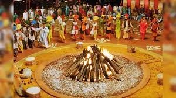

A festival of Farmers
The principal theme of Pongal is thanking the Sun god Surya, the forces of nature and the farm animals and people who support agriculture. The festival is mentioned in an inscription in Viraraghava temple attributed to Chola king Kulottunga I (1070–1122 CE) which describes a grant of land to the temple for celebrating the annual Pongal festivities.[30]
The 9th-century Shiva bhakti text Thiruvembavai by Manikkavasagar vividly mentions the festival.[30]
The history of the Pongal dish in festive and religious context can be traced to at least the Chola period. It appears in numerous texts and inscriptions with variant spellings. In early records, it appears as ponakam, tiruponakam, ponkal and similar terms.[31]
Temple inscriptions from Chola period to Vijayanagara period detail recipes similar to pongal  recipes of the modern era with variations in seasonings and relative amounts of the ingredients.[31]
recipes of the modern era with variations in seasonings and relative amounts of the ingredients.[31]
The terms ponakam, ponkal and its prefixed variants might also indicate the festive pongal dish as a prasadam which were given as a part of the meals served by free community kitchens in South Indian Hindu temples either as festival food or to pilgrims every day.[31]
Pongal (பொங்கல், /ˈθaɪˈpoʊŋʌl/), also referred to as Thai Pongal (தைப்பொங்கல்), is a multi-day Hindu harvest festival celebrated by Tamils.[1][7][8]
It is observed in the month of Thai according to the Tamil solar calendar and usually falls on 14 or 15 January.[3] It is dedicated to the Surya, the Sun God and corresponds to Makar Sankranti, the harvest festival under many regional names celebrated throughout India.[9][10][11][12]
The three days of the Pongal festival are called Bhogi Pongal, Surya Pongal, and Mattu Pongal.[10] Some Tamils celebrate a fourth day of Pongal known as Kanum Pongal.[7]
According to tradition, the festival marks the end of winter solstice, and the start of the sun's six-month-long journey northwards when the sun enters the Capricorn, also called as
The festival is named after the ceremonial "Pongal", which means "to boil, overflow" and refers to the traditional dish prepared from the new harvest of rice boiled in milk with jaggery offered to Surya. Mattu Pongal is meant for celebration of cattle when the cattle are bathed, their horns polished and painted in bright colors, garlands of flowers placed around their necks and processions.[8][13]
It is traditionally an occasion for decorating rice-powder based kolam artworks, offering prayers in the home, temples, getting together with family and friends, and exchanging gifts to renew social bonds of solidarity.[3][14]
Pongal is one of the most important festivals celebrated by Tamil people in Tamil Nadu and other parts of South India.[15][7][16][17]
It is also a major Tamil festival in Sri Lanka.[18][19] It is observed by the Tamil diaspora worldwide,[20][21] including those in Malaysia,[22][23] Mauritius, South Africa,[24][25] Singapore,[26] United States, United Kingdom, Canada, and the Gulf countries.[27][28][29]